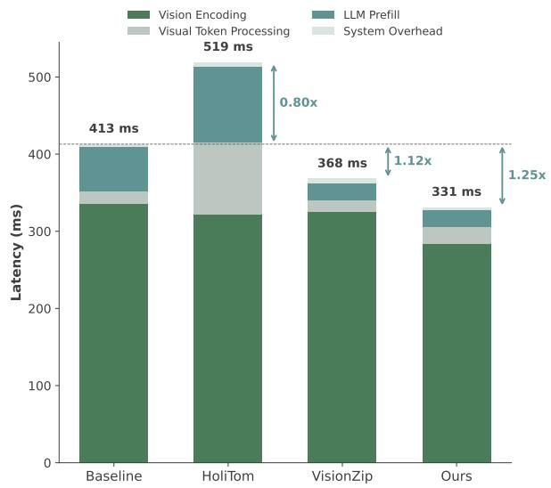

Figureure 1 · Left: This paper aims to improve the inference efficiency of video undFigure 1. Left: This paper aims to improve the inference efficiency of video understanding based on video large language models (LLMs). Latency profiling suggests the major speed bottleneck lies in the vision encoder part instead of the LLM. Knowing this, we introduce EarlyTom, a training-free token compression method designed for the early stage (i.e., vision encoder) of video LLMs. EarlyTom features two core components: (1) early-stage visual token compression achieved via inner vision encoder frame merging, and (2) a spatial token selection strategy that further increases compression effectiveness without introducing bias. Right: Scatter plot illustrating the relationship between FLOPs and throughput, along with the average performance across four widely used video understanding benchmarks (MVBench, EgoSchema, LongVideoBench, and VideoMME) for several training-free state-of-the-art methods. EarlyTom achieves state-of-the-art performance while maintaining accuracy comparable to full-token methods.这张图/表用于判断 EarlyTom 的实验收益来自哪里。重点看替换、消融或跨模型设置下趋势是否一致，而不是只看单个最高分。

(d) 25% token retention rate(d) 25% token retention rate. Figure 8. Time-to-first-token (TTFT) comparison on the LLaVA-OneVision-0.5B model. We report the latency breakdown (vision encoding, token processing, LLM prefill, and system overhead) across different methods.这张图/表用于判断 EarlyTom 的实验收益来自哪里。重点看替换、消融或跨模型设置下趋势是否一致，而不是只看单个最高分。